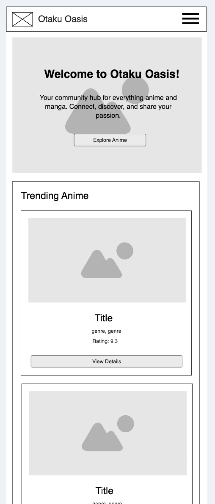

Site Name
Otaku Oasis
"Otaku Oasis" was chosen as the site name because "Otaku" is a widely recognized term in the anime and manga community for someone with a deep passion for these interests. "Oasis" suggests a welcoming, safe, and refreshing space where fans can gather, share, and find resources. It combines a direct reference to the hobby with the desired community feel.
Site Purpose
The Otaku Oasis website serves as a central hub for the Anime and Manga Club. Its purpose is to foster community among enthusiasts of Japanese animation and comics by providing comprehensive information on anime series, detailing characters, facilitating user-generated recommendations, and announcing club activities like anime sessions. It aims to be a go-to resource for both new and seasoned fans to discover, discuss, and connect.
Scenarios
- Scenario 1: "I'm looking for a new anime to watch. Can I see what others in the club recommend?"
- Scenario 2: "I'm curious about the main characters in 'My Hero Academia'. Where can I find detailed information about them, including their roles and powers?"
- Scenario 3: "I want to submit my own review for a manga I just finished. How can I add my recommendation to the site?"
Color Schema
Primary Color: #2C3E50 (Dark Blue/Gray)
Usage: Headings, prominent buttons, navigation background, section backgrounds.
Accent Color: #E74C3C (Crimson Red)
Usage: Call-to-action buttons, active navigation links, important highlights, small decorative elements.
Neutral Light: #ECF0F1 (Light Gray)
Usage: Backgrounds of content areas, card backgrounds.
Text Color: #34495E (Darker Gray/Blue)
Usage: Body text, secondary headings.
Typography
Heading Font: 'Roboto' (Bold for H1, H2)
Otaku Oasis - Your Community Hub
Section Titles and Important Elements
Usage: All headings (H1, H2, H3), navigation items, prominent calls-to-action.
Body Font: 'Open Sans' (Regular)
This is an example of the body text that will be used throughout the website. It is chosen for its high readability and clean appearance across various devices and screen sizes. It will be used for paragraphs, list items, and general descriptive content.
Usage: Paragraphs, list items, form labels, small text, general content.
Wireframe: Home Page Layout
Mobile View (approx. 320px - 600px wide)
Layout: Single column stack.
Larger/Desktop View (approx. 1024px+ wide)

Layout: Multi-column.